第1章
终极井字棋
什么是数学？
一次，我和一群数学家在伯克利野餐，他们没有在草地上玩飞盘，而是聚在一起开始玩一个我万万没想到的游戏：井字棋。
你可能和我一样，觉得井字棋简直是“无聊癌晚期患者”（不，这种病不存在）才会玩的游戏，因为这个游戏中能走的步数太少，经验丰富的玩家很快就能记住最佳策略。我每次玩井字棋都是下面的结局：
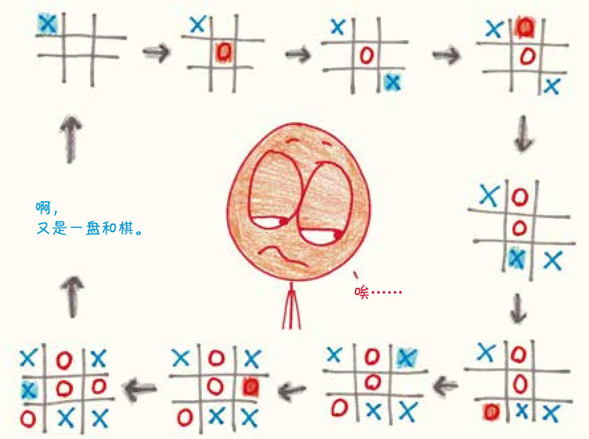
双方都掌握了规则后，每一局游戏都会以平局告终，永远分不出胜负。所以在我看来，这就是一个对玩法死记硬背的游戏，丝毫没有创造的空间。但那次在伯克利野餐时，我的数学家伙伴们玩的并不是传统的井字棋。他们的棋盘是这样的：井字里的每个方格都变成了一个井字小棋盘。1
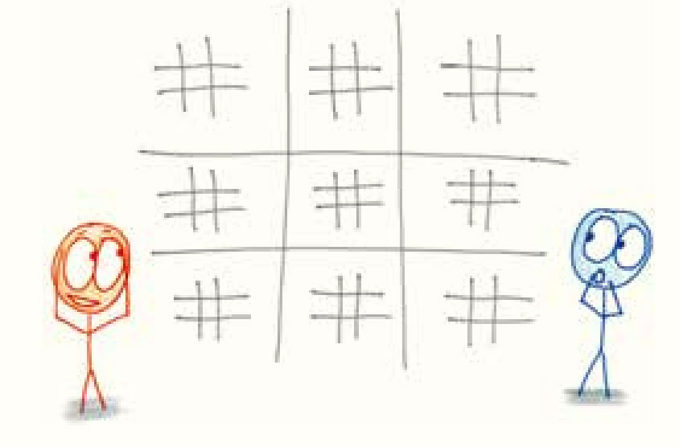
我在一旁看着，很快就明白了基本规则。
1. 每人轮流在小棋盘里选一个小方格，做上自己的标记。
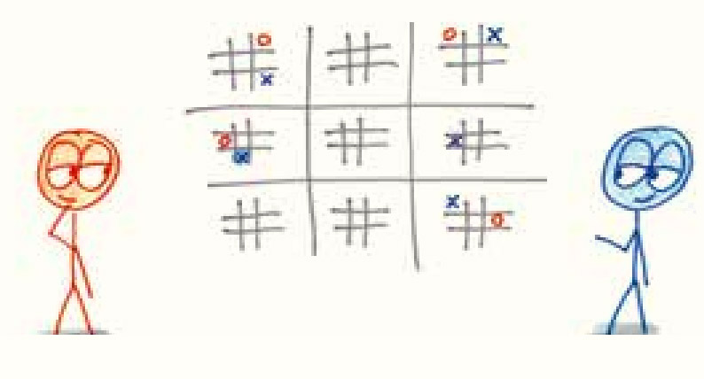
2. 如果在小棋盘的任意一条直线上出现了三个你的标记，你就赢得了这个小棋盘。
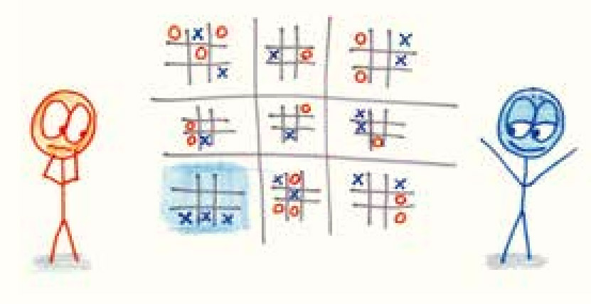
3. 如果在大棋盘的任意一条直线上出现三个属于你的小棋盘，你就赢了这局游戏。
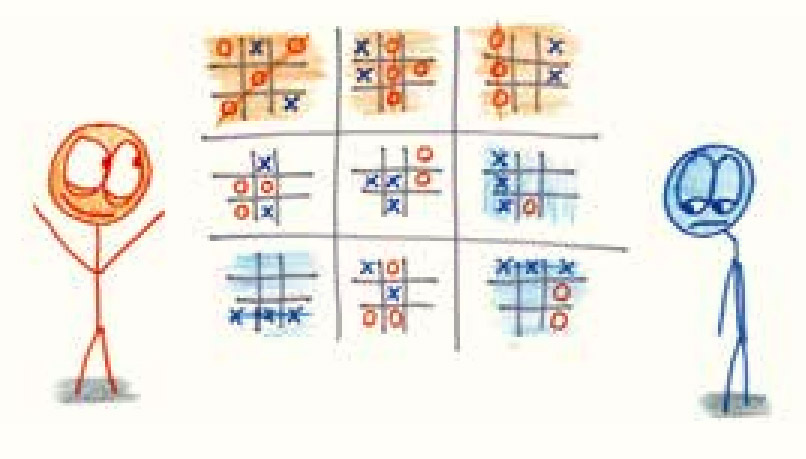
不过，我看了好一会儿，才渐渐明白最重要的规则。
你没法决定在九个小棋盘中选择哪一个进行下一步。这取决于对手的上一步棋。无论他在小棋盘上选择哪一个方格，你都必须在大棋盘上选择一个和那个方格位置对应的小棋盘（当然，你在小棋盘上选择的任何一个方格，也决定了他接下来要选哪个小棋盘）。
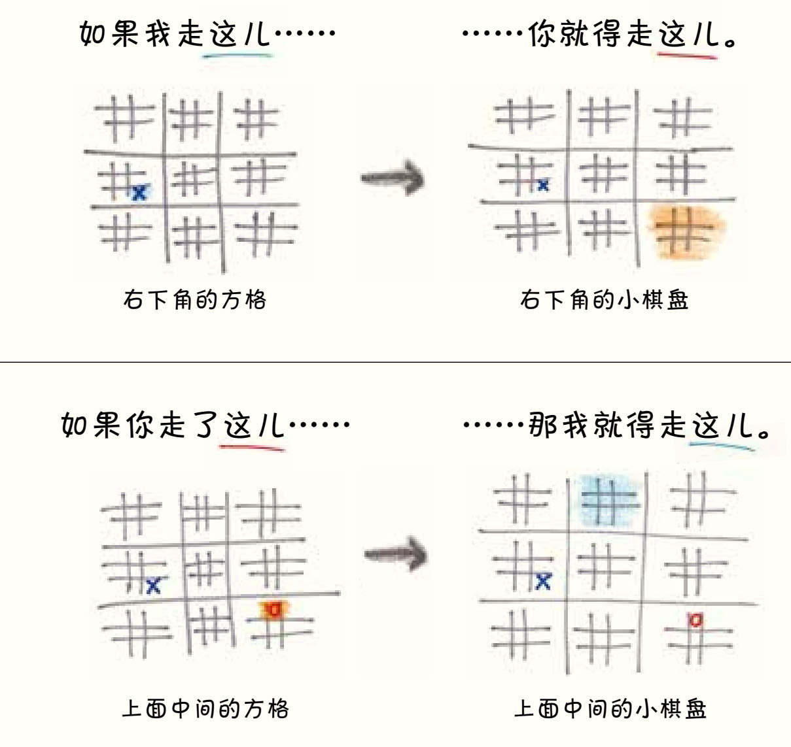
这样一来，这个游戏就开始讲策略了。你不能每次只盯着一个小棋盘，还要考虑你的选择会把对手送到哪里，他的下一步选择又会把你送到哪里，你得不断地推测后续的局面。
（这条规则也有一个例外：如果对手把你送到一个已经分出胜负的小棋盘上，那么恭喜你——你下一步选哪个小棋盘都可以。）
这样的游戏局面看起来有点儿诡异，因为玩家经常会绕开对自己而言优势明显的小棋盘，在那些小棋盘上，他们可能很容易做出两个或三个一排的标记。这就像一个篮球明星绕过一个无人防守的篮筐，把球扔向看台上的观众一样古怪。但这种愚蠢的行为中也有一套方法——玩家需要未雨绸缪，提前布局，小心翼翼地不让敌人踏入关键领域。在小棋盘上看起来很聪明的一步妙棋有可能让你在大棋盘上失去有利局面，反之亦然，这就让游戏变得紧张又刺激。
学会这种终极井字棋后，我也常和学生一起玩。2他们很高兴能有运用战术打败老师的机会，当然他们更高兴的是，在课堂上玩这个游戏就不用做三角函数题了。不过，时常有学生会不好意思地问：“老师，我是挺喜欢这个游戏的，但这个游戏和数学有什么关系呢？”3
我知道在其他人眼中，我的工作充斥着死板的规则和公式化的流程，和登记保险、填写税单一样枯燥无聊。下面就是那种和数学相关的乏味任务：
求出每个矩形的面积和周长。
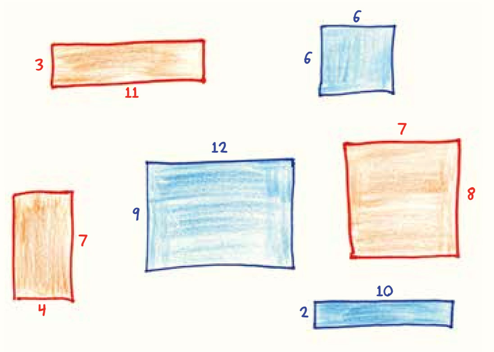
我猜，看到这个问题后，也许只要片刻，你就想起了可以套用的公式，同时也就结束了思考。在公式和定理面前，“周长”不再意味着沿着矩形边界漫步一圈的路程，而是两个数字分别乘以2后再相加；“面积”不再意味着填满矩形所需的边长为1的小正方形个数，而只是两个数字相乘。就像在一个传统井字棋游戏中一样，你陷入了无意识的、机械化的计算，这样的计算自然毫无创新和挑战可言。
然而，数学所蕴含的内容可远远不止这种忙忙叨叨的机械运算。就像令人跃跃欲试的终极井字棋游戏，数学也可以充满冒险和探索精神，玩家需要在耐心和风险间平衡和取舍。比如上面那道只靠死记硬背的问题，可以变成这样：
画出两个长方形，使第一个长方形的周长更长，第二个长方形的面积更大。
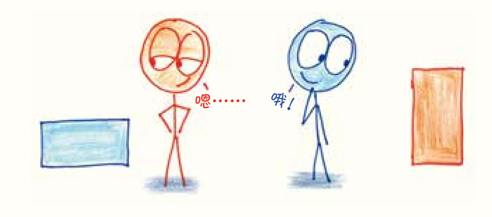
这个问题将面积和周长两个概念对立起来，形成了一种天然的矛盾，没有可以直接套用的公式，因此要求答题者对矩形的本质有更深入的了解4（欲知答案，请看尾注）。
或者，再把题目改成这样：
画出两个长方形，使第一个长方形的周长恰好为第二个长方形周长的两倍，同时第二个长方形的面积恰好为第一个长方形面积的两倍。
现在感觉数学题有点儿刺激了吧？
通过两次简单的升级，我们把一个程序化的“苦差事”变成了相当费脑的小谜题。有一次，我把这道题作为期末考试的附加题，全校的六年级学生都被难倒了（同样，这道题的答案见尾注5）。
这个变化过程表明，创造力需要自由，但又不能只有自由。如果我只要求“画出两个矩形”，这样漫无边际的问题不过是湿漉漉的火柴，是无法点燃创造力的。为了激发真正的创造力，我们需要的是有约束条件的难题。
还是回到终极版井字棋的例子。每次轮到你做选择的时候，你能走的地方都不多——可能有三四个吧。这就足以让你尽情发挥想象了，但又不至于让你想太多，陷入有无数可能性的沼泽。正是通过提供足够的规则和足够的约束，这个游戏才激发了我们的创造力。
这个例子很好地总结了数学的乐趣：创造力源于约束。如果常规的井字棋是一般人所了解的数学，那么终极井字棋才是数学本来的样子。
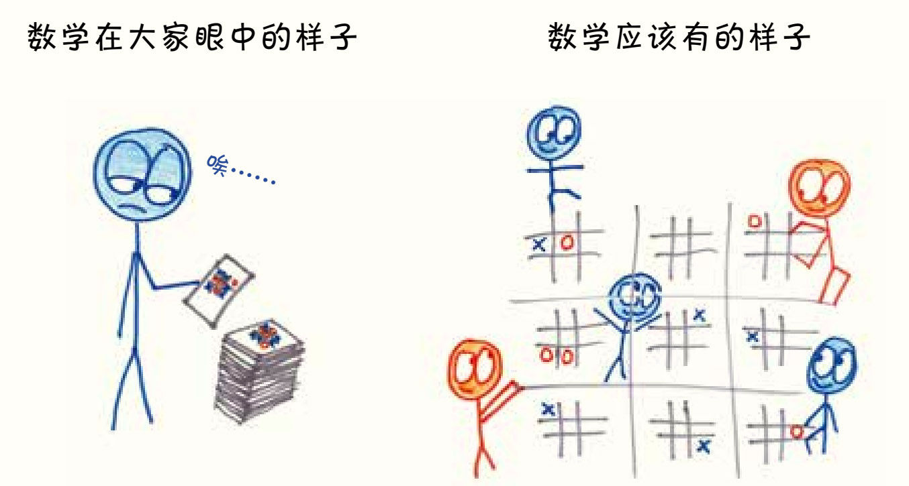
其实，所有的创造力都是在约束下激发的。用物理学家理查德·费曼的话来说，“创造力就是穿着约束衣的想象力”。比如十四行诗，它就有严格的格式限制——格律要严谨，语句要整齐，用词要押韵……就连莎士比亚都要先满足这些条件，才可以用诗表达爱意。但这种约束非但没有使作品的艺术性打折，反而使其更为突出。或者，看看体育运动吧。在足球赛场上，在严格遵守比赛规则、不用手碰球的同时，球员们为了把球踢进球门，创造了“倒挂金钩”和“鱼跃冲顶”。违反了规则，就失去了比赛的风度。即便是那些古怪前卫、挑战传统的艺术，比如实验电影、表现主义绘画、职业摔跤，也都是通过对抗其所属媒介的约束来汲取力量的。
创造力就是当大脑遇到障碍时激发的能力。只有遇到障碍时，人们才会想尽办法找到一条新出路。因此，没有障碍，就没有创新。
在数学中，这个道理有更进一步的体现。在数学上，我们不只遵守规则，还发明和调整规则。在提出一种可能的约束条件后，我们按逻辑进行运算和推导，如果得到的结论意义不大甚至无聊乏味，我们就要继续寻求更有效的新解法。
比方说，如果我对关于平行线的这个假设提出质疑，会怎么样呢？
通过P点且平行于直线L的直线有且只有一条。
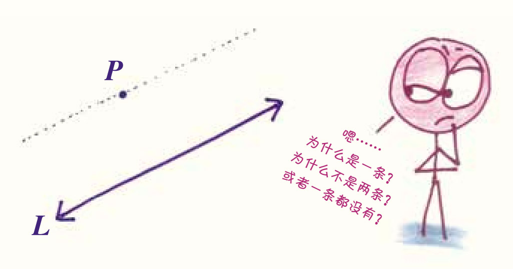
这是欧几里得在公元前300年提出的平行线规律，他认为这是理所当然的，并称之为平行线的基本假设，即公理。这让后人感到有点儿滑稽，为什么要称之为假设呢？难道这不是可以证明的吗？两千年来，无数的学者试图证明这则关于平行线的规律，但最后他们茅塞顿开：没错，这确实是一个假设，我们也可以不这样假设。但如果不这样假设，传统的几何理论体系就会坍塌，世界上会冒出另一个奇怪的几何体系，而在新的体系中，“平行”和“直线”表示完全不同的概念。
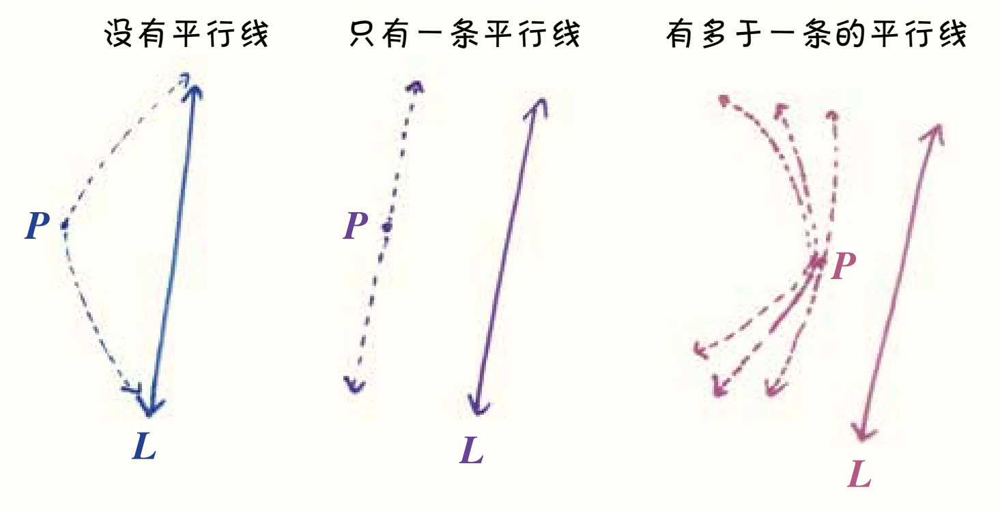
新的规则，就意味着新的游戏。
事实证明，终极井字棋也是如此。我在分享这个游戏后不久就意识到，这个游戏中的一切都围绕着一个技术细节，也就是我在上文中提到的：如果对手想把你送到已经分出胜负的小棋盘，那会发生什么呢？
我现在的答案和上文一致：既然那个小棋盘的争夺战已经结束，你就可以去任何一个想占领的小棋盘。
不过，我最开始的想法是这样的：只要那个小棋盘上还有空位，你就必须在下一步走到那个小棋盘上，即使这样浪费了一步棋的机会。
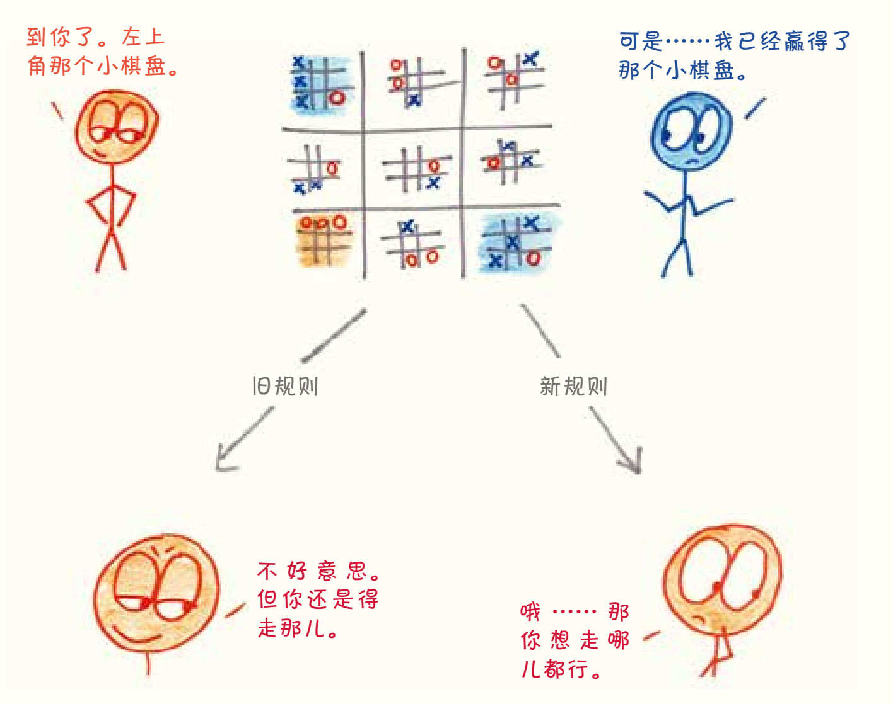
这听起来没什么大不了的——如果游戏是一张针织挂毯，这不过是挂毯上的一根线罢了。但是，当我们拉动这条线时，它却能牵一发而动全毯。
下面，我用自己的开局策略——我自封的“奥尔林战术”——来说明一下原始规则的特性。
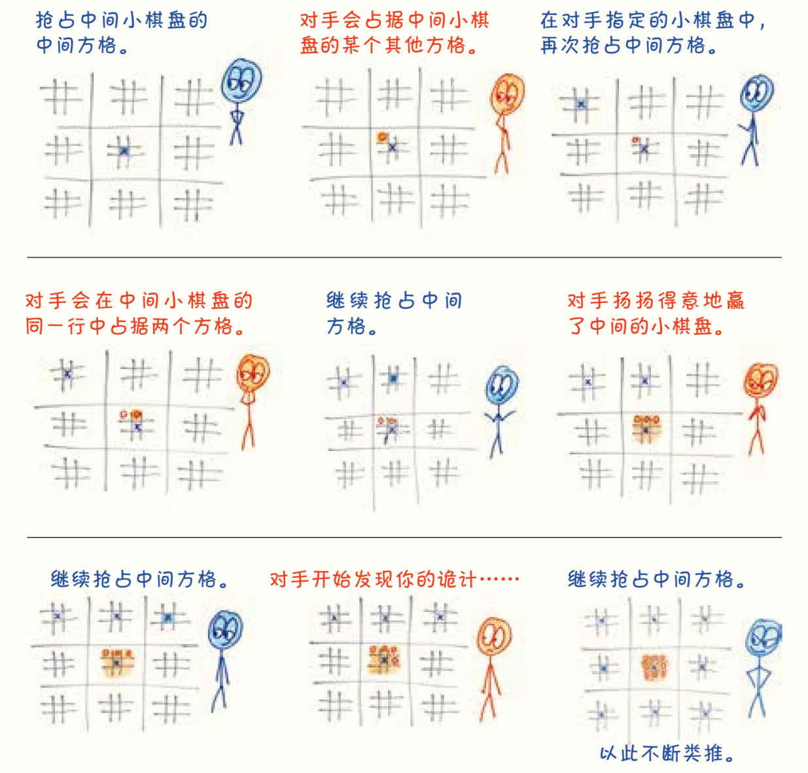
通过这样的策略，画×的一方牺牲了中间的小棋盘，换取了在其他8个小棋盘上的优势。我最初认为这个计谋非常完美，直到有读者指出它还有改进之处。我的“奥尔林战术”赢得的不过是小优势，其实它可以扩展为战无不胜的策略6。与其牺牲一个小棋盘，不如牺牲两个小棋盘，并且在其他7个小棋盘上占据两个排成直线的方格，这样胜利就唾手可得了。
我尴尬地更新了对游戏的解释，给出了当前版本的规则——这个关键的小调整把终极版井字棋从模式化的策略中拉了回来。
新的规则，就意味着新的游戏。
这正是数学发展的过程。我们制定一些规则，开始玩游戏。当游戏过时了，我们再改变规则，放开旧的约束，设置新的限制，每一次调整都会带来新的难题和挑战。大多数时候，与其说数学意味着解出别人的题目，不如说它意味着设计自己的题目，在这个过程中，我们不断探索哪些规则会产生有趣的游戏，哪些则令人感到乏味。这种规则调整的过程，也就是从一个游戏转移到另一个游戏的过程，会让人感觉置身于永无止境的宏大的游戏世界中。
没错，数学就是设计逻辑游戏的逻辑游戏。
在数学的历史中，我们一次又一次地发明、解答和重新发明逻辑游戏。比如，如果把下面这个简单方程中的指数从2变成另一个数字，比如3、5，或者797，会发生什么呢？
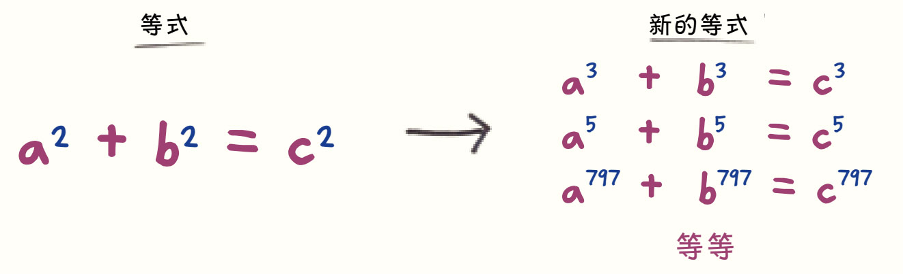
瞧，通过简单地替换整数，我把一个古老的初级方程变成了世界上最难解的方程之一：费马大定理(1)。这个方程折磨了各国学者350多年，直到20世纪90年代，一个英国学者拿出了自己在阁楼里埋头计算近十年的成果，才证明了这个方程没有整数解。7
或者，如果我取两个变量（比如x和y）并创建一个坐标网格图表示它们之间的关系，又会发生什么呢?
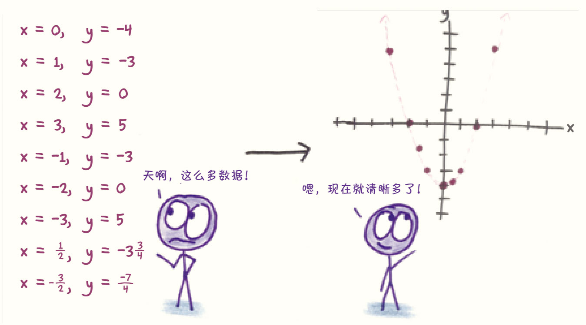
瞧，我发明了平面直角坐标系，对数学思想进行了可视化的革新——我叫笛卡儿，这就是他们花大价钱请我的原因。
再换个规律看看。通常来说，一个非0数字的平方是正数，但如果我们发明一个例外，使一个数的平方为负数，又会发生什么呢？
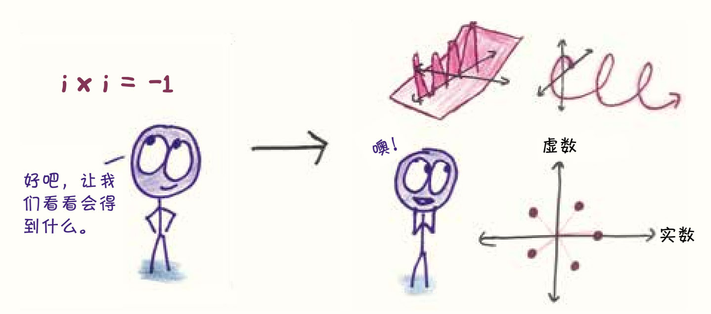
瞧，现在我们发现了虚数，为电磁学的探索送上了了不得的工具。我们还解锁了一个被称为“代数基本定理”的数学真理。如果这真是我们的贡献，那我们的简历一定很好看。
在上述几个例子中，数学家最初都低估了改变规则的革命性意义。在第一个例子里，费马认为证明这个定理并不难，但经历了好几个世纪，他的后辈失意地宣告事实并非如此。在第二个例子中，笛卡儿的图形思想（现在以他的名字命名为“笛卡儿坐标系”）最初只是哲学书的附录，图书再版时还经常会漏掉或删掉这一部分。在第三个例子中，在被认为是真实有用的数字之前，虚数面对了数百年的冷遇和嘲讽，伟大的意大利数学家卡尔达诺就说过“它们既麻烦又没用”8。甚至连“虚数”这个名称都是贬义的，这个贬义词的首创者不是别人，正是笛卡儿。
当新思想不是诞生于对事实的严肃思考，而是诞生于游戏中时，人们很容易低估它们。谁能想到只是对指数、可视化方式、数字规则的一点儿调整，就能超越人们的想象和认知呢？
我想，参加那次野餐的数学家也许并没有在那场终极井字棋游戏中想到这一点，但他们也不必想到。不管我们有没有想到这个道理，这个设计逻辑游戏的逻辑游戏已经推动所有人开始思考了。
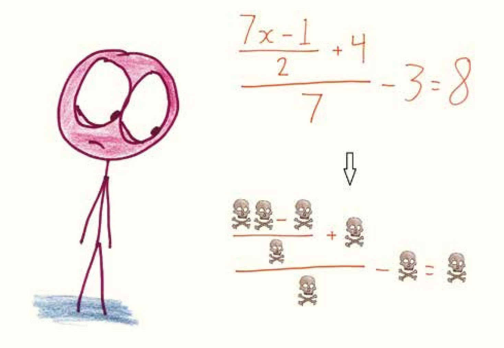
一辆火车从距离你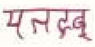
处驶来，你被绑在铁轨上，正以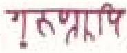
的速度挣脱绳子。如果弄错了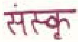
和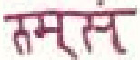
，你将当场丧命，求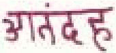
需要多长时间？（假设没有空气阻力。）
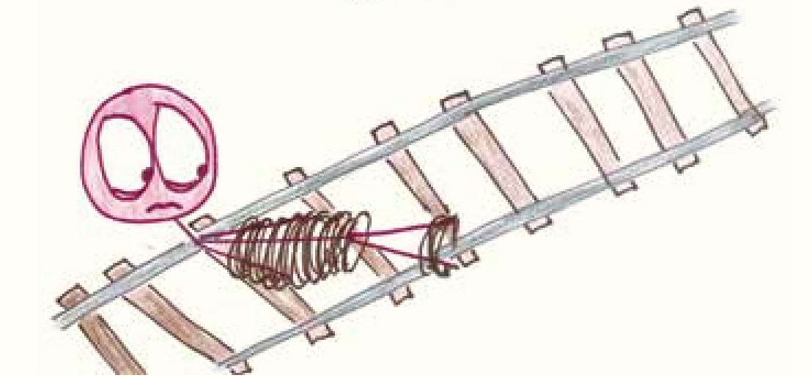